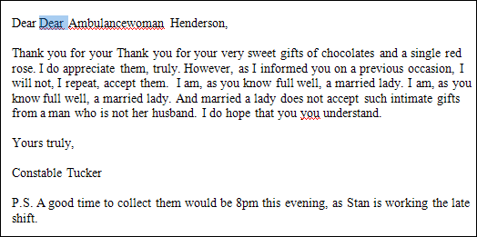
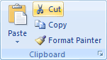
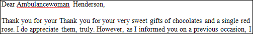
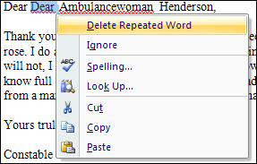

Free
computer Tutorials
|
Free
computer Tutorials
|
|
 home home |
|
||||||
Microsoft Word 2007 to 2010
Techinques for Cutting TextIn this section you'll learn all about cutting text, copying text, and pasting text. Word processors come into their own with Cut, Copy and Paste, and those three operations are the primary reason why the typewriter is now practically a museum piece. There is a document that goes with this section called CutCopyPaste.docx and can be downloaded by clicking below. It is one of a few documents you need for this course, and all the other files are included in the download as well. However, it is a zip file. If you're not sure how to open zip files then you also need to read the short tutorial below. Get All The Extra Files Needed For This Course Once you've saved the file above, open up the document called CutCopyPaste.docx in Microsoft Word and we'll make a start.
Cutting textThere are a number of ways to cut text, and you'll learn three techniques: using the Word ribbon, using the right click menus, and using the keyboard. We're now going to chop out the unnecessary bits from the letter you've just opened. The first thing to cut out is the double use of "Dear" in the first line. To cut text, use one of the following techniques:
Technique 1 - Menu Cutting Highlight the text you want to cut. In the image below, the word "Dear"
is highlighted. This is the word we want to cut: 
 Your highlighted text will disappear: 
Technique 2 - Right Click Cutting Highlight the text you want to cut: Click on the highlighted text with the right mouse button to get the popup menu below:  Choose "Delete Repeated Word", by clicking it with the left mouse button.
Technique 3 - Keyboard Cutting
And that's all there is to cutting text. Keyboard cutting is often the quickest way, as it means your fingers don't have to leave the keys when you're typing.
Now let's have a look at how to Cut and Paste text. <--Back to the Word Contents Page View all our Home Study Computer Courses
|
|||||||
|